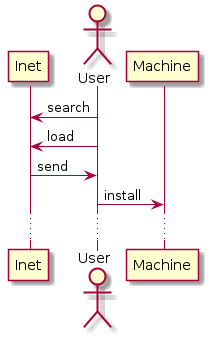

https://de.wikipedia.org/wiki/Markdown
sudo apt-get install retext
sudo apt-get install retext
retext
retext &
Datei->Speichern unter->Dateiname
see
https://github.com/gerald1962/van/doc/markdown/example.mkd
Datei->Exportieen->PDF
see example.pdf

https://en.wikipedia.org/wiki/PlantUML
sudo apt install plantuml
sudo apt install w3m
plantuml
cd ~/github/van/doc/plantuml
java -jar /usr/share/plantuml/plantuml.jar -verbose example.txt
java -jar /usr/share/plantuml/plantuml.jar -gui example.txt
see
https://github.com/gerald1962/van/doc/plantuml/example.mkd
w3m example.png